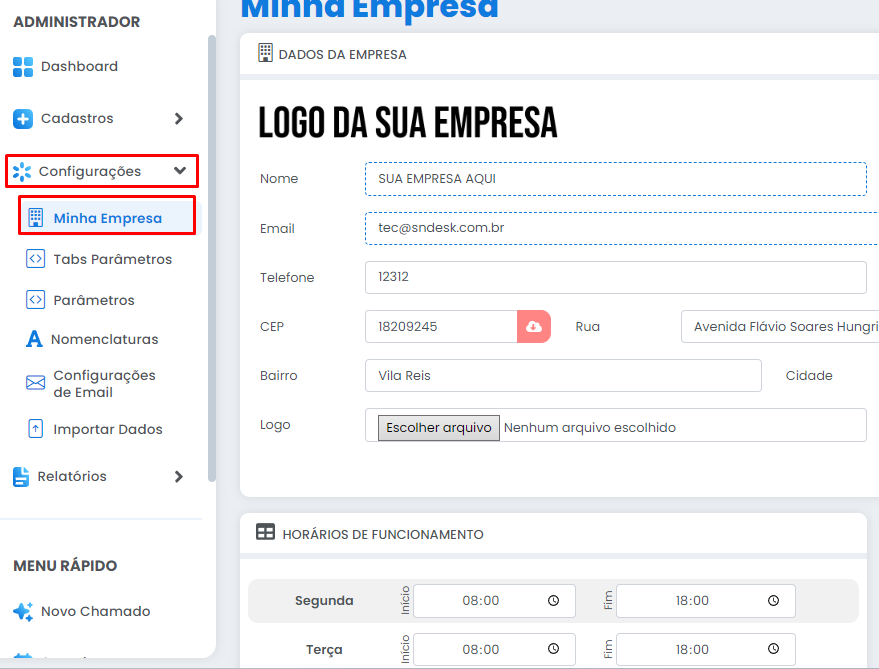
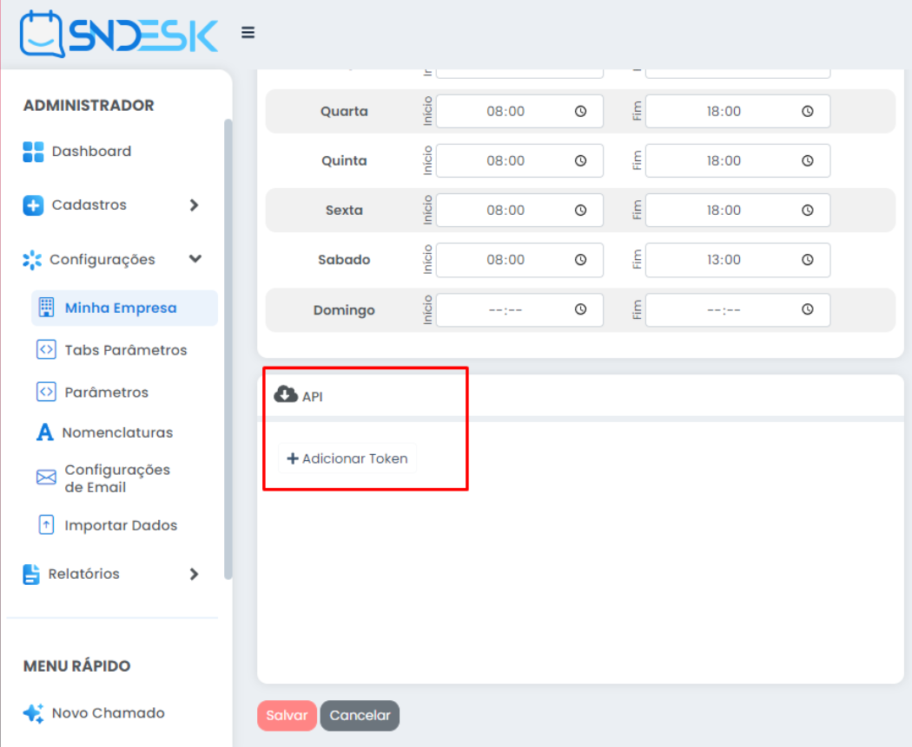

Para começar a aproveitar todos os recursos da nossa API, é necessário obter um token de acesso exclusivo para a sua empresa! Esse token desempenha um papel crucial na identificação e autenticação dos usuários do nosso sistema, garantindo a segurança e a praticidade que você merece.
Para gerar o seu token exclusivo, é necessário estar conectado à plataforma SNDesk. Basta acessar a aba "Configurações" e, em seguida, selecionar "Empresa". Lá, você encontrará a opção para criar o seu token de acesso.
Role a página até encontrar a seção "API" e clique em "Adicionar token" para iniciar o processo de geração do seu token exclusivo.
Escolha se é um token para abertura de chamados ou criação de usuario/cliente ou de ambos.
Pronto! você já está com o token para utilizar na API.